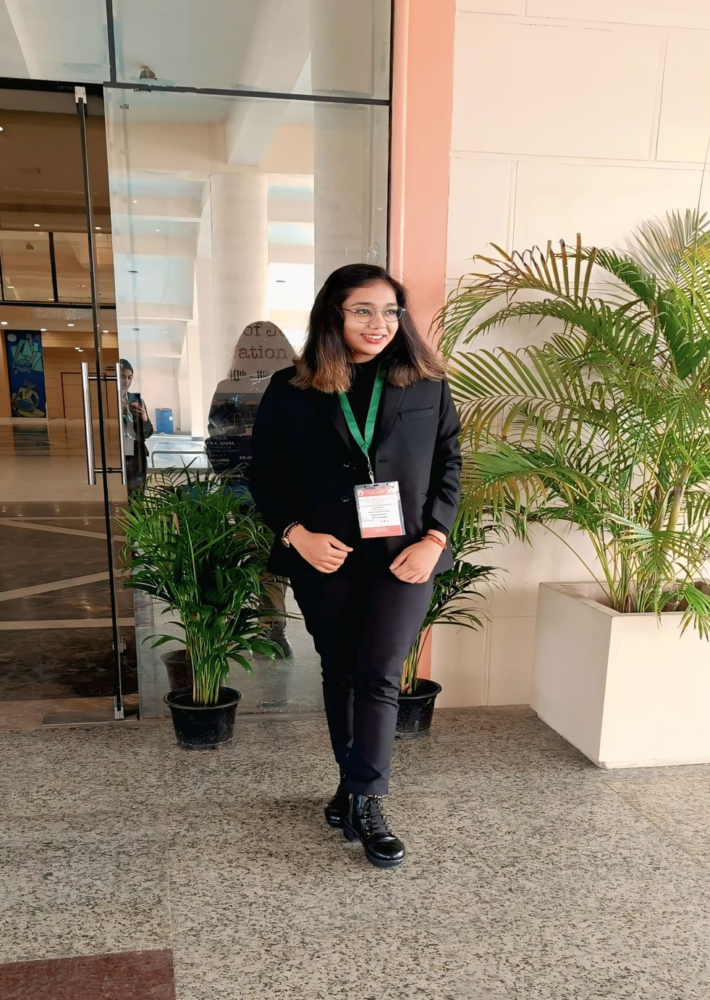

Experiences and Certificates


SEO Certificate
Earned an SEO certification, gaining expertise in keyword research, on-page optimization, and analytics to enhance website visibility and search rankings..

UNESCO India Africa Hackathon
Worked as the Media Coordinator for the UNESCO India-Africa Hackathon, managing content creation, event coverage, and media outreach to ensure effective communication and engagement.